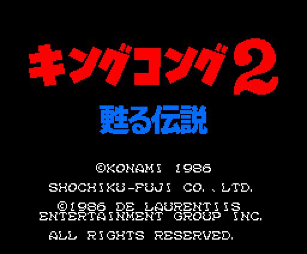
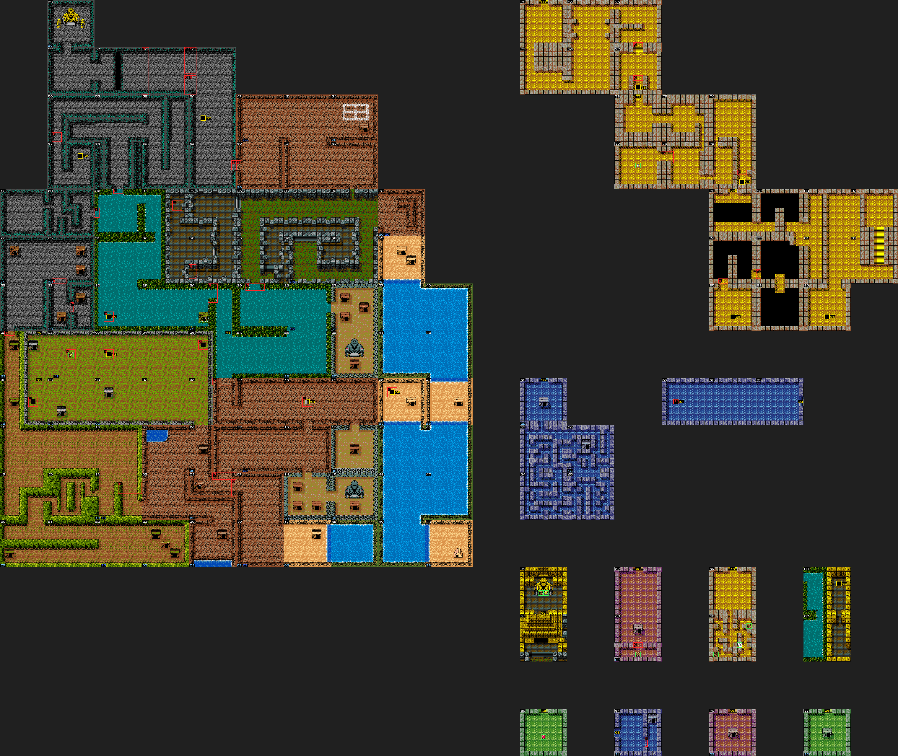
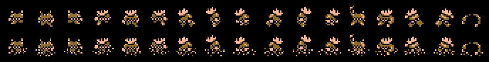
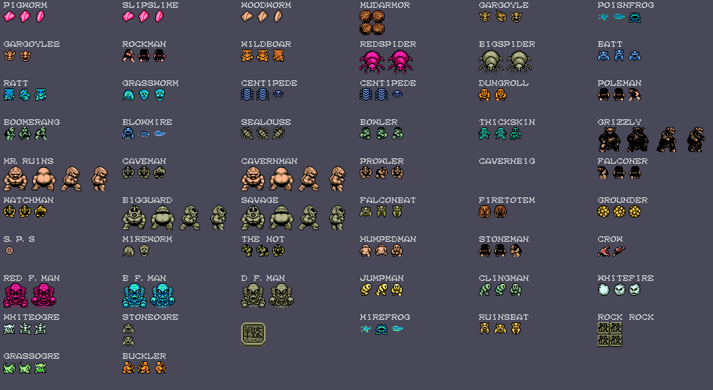
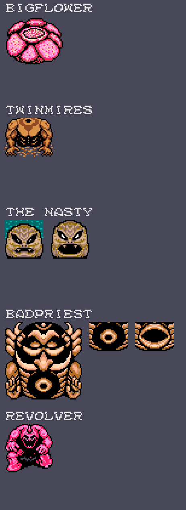
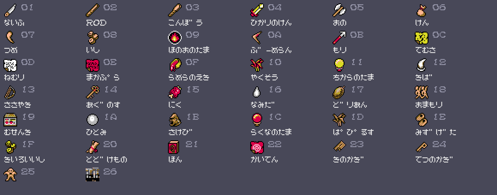

Mitchel looks for LADY KONG across an island: KING KONG is dying and only she can save him. Over the radio the army hurries him («Still not found LADY KONG? If you do not hurry, KING KONG will die»), and around the island there are people who talk, shops, inside areas and 55 kinds of named enemies, plus five bosses that are not sprites.
Every picture on this page is drawn from the bytes of the ROM with the tools in tools/, which follow the cartridge's own steps. Under each one it says which table it comes from and how it was checked against openMSX (MSX2, C-BIOS_MSX2_JP).

The キングコング2 甦る伝説 logo is made of 1-bit letters (p06:A2A1, A3C1 and A561) that p00:4867 uploads to page 1 in two colours; the palette brightens in three phases (p06:B9C8). Before it, the Konami logo is uncovered. Both checked against openMSX: 0 dots different and the same 16 colours.

There are 140 screens seen whole, with no scrolling: 97 on the island and the rest in eleven inside areas. Each screen says which are its four neighbours (p09:B1C5); putting them together gives the map, and the order of the exits is checked in openMSX by walking Mitchel out through the edges. 0xF0-0xFB are special exits (p01:611F) that lead to another screen and to a given spot.
On top, taken from the tables:
On the right: MITCHEL, DAYS (a day every 2048 frames), LIFE (you start with 30; the maximum is 30 + 16 × LEVEL), EXP (up to 9999), LEVEL (one more every 100 EXP, up to 99), MP, GOLD (you start with 200), and what you carry in SHOT1 (the weapon) and SHOT2 (the item). All in BCD.

Seventeen poses (0xC310) in two sets: out of the water and in it, with the legs hidden (0xC160). Each pose is an RLE (p13:7D9B and p13:7DBD) giving two 16 × 16 patterns: one in colour 1 and another with the CC bit set, which adds its colour to the one below.

Each screen brings its list (p13:6000: [type][x][y]); bit 7 of the type says it only appears on the alternate plane. The name shown on the panel when you hit it is the one at p15:BA76. The frames of each enemy are the ones recorded in openMSX screen by screen; their patterns and colours come from the ROM.
A dead enemy does not come back while Mitchel stays within the 3 × 3 screens around (0xDF00, p00:590B), and a dead boss never comes back (0xDE00).

BIGFLOWER, TWINMIRES, THE NASTY, BADPRIEST and REVOLVER are drawings that p00:4BD0 uploads raw to page 1 on entering their screen (the figures in p14; some twice, the second one mirrored). The VDP copies them to page 0 with LMMM every time they change: the mouth of THE NASTY and BADPRIEST, shut and open. Checked against openMSX: 0 bytes different in their seven screens.

38 16 × 16 drawings (p07:630A) that p00:4AED uploads to page 1. The names are the ones at p15:A069, in the game's font. From 0x01 to 0x0B (and 0x1F) they go to SHOT1, the weapons; the rest, to SHOT2 (p01:7A35).
A hit does (LEVEL + 10) × the weapon's strength (p09:B7EF):
| weapon | strength |
|---|---|
| the fist | 10 |
| ないふ (knife) | 15 |
| ROD | 12 |
| こんぼう (club) | 18 |
| ひかりのけん (sword of light) | 20 |
| おの (axe) | 25 |
| けん | 30 |
| つめ (claw) | 20 |
| いし (stone) | 15 |
| ほのおのたま (fireball) | 20 |
| ぶーめらん (boomerang) | 18 |
| もり (harpoon) | 20 |
But not every weapon works against everyone (p09:BB14): the axe only against GRIZZLY, the harpoon only against B F MAN and D F MAN, the sword of light is the only one that hurts WHITEFIRE and WHITEOGRE, and THE NASTY, BADPRIEST and BIGFLOWER take nothing from close combat. This comes from the code; we have not played it.
The spells (SHOT2) spend MP: てむさ removes rocks (event 4), ねむり freezes the enemies and まかぷら kills THE NASTY and BADPRIEST.
There are 56 conversations (p12:A66E), with actions between lines (p12:B500-B8FC): giving or taking items and money, asking with 1, 2 and 3, selling. They are transcribed from Japanese with tools/dialogos.py. A few things that come out of them and of the code:
On finding LADY KONG, p06:A837 chooses one:
The texts are the ROM's (p06:AD44-AF40); the conditions come from the code and have not been played.